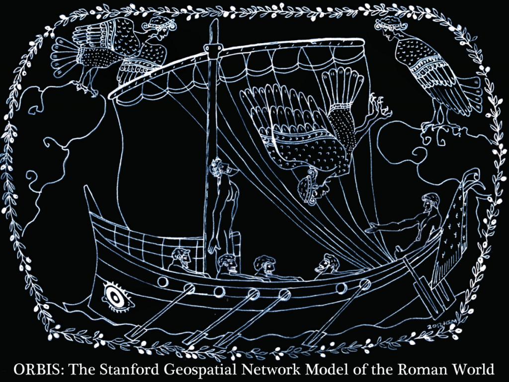
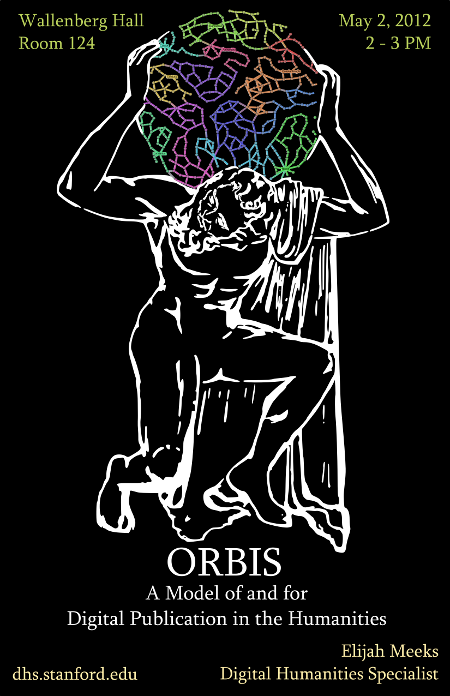

I consider ORBIS to be an example of a new kind of digital scholarly publication, that integrates narrative and data-driven representations of claims. If you happen to be around Stanford today, I’ll be giving a talk on the details of the project today at 2PM in Wallenberg Hall.

In the coming weeks, I’ll begin to explain and present the code behind the various pieces of the transportation network model that runs ORBIS, as well as frame where this work sits in respect to other digital scholarly publications. Thanks so much to everyone who has provided feedback on the preliminary site, and for all the support and encouragement that you’ve given us.